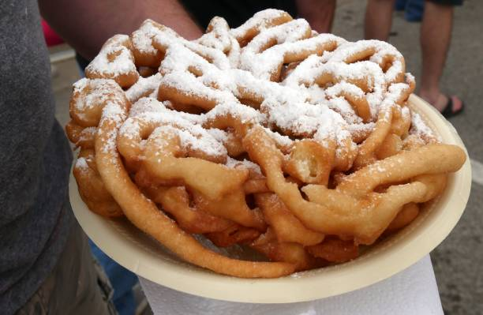

Funnel Cake

Description
A funnel cake is a popular dessert made by frying batter. Commonly served at carnivals and amusement parks, funnel cakes (as we know them today) originated in Pennsylvania in the late 1800s. The fried dessert is liberally sprinkled with powdered sugar before serving.
Ingredients
- Oil: You'll need about a quart of vegetable oil for frying the funnel cakes.
Milk: Milk lends moisture, ensuring a perfectly tender funnel cake.
Eggs: Two eggs lend even more moisture. Plus, they act as a binder for the batter.
Flour: All-purpose flour creates structure in the funnel cake batter.
Baking powder: Baking powder acts as a leavener, which means it helps the batter rise.
Cinnamon and salt: Ground cinnamon and a pinch of salt enhance the overall flavor of the funnel cakes.
Sugar: Sprinkle the funnel cakes with powdered sugar (a.k.a. confectioners' sugar) right before serving.
Steps
- Make the batter.
- Funnel the batter into the hot oil using circular motions.
- Sprinkle the funnel cakes with powdered sugar before serving.